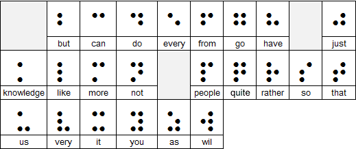

Overview
This assignment should be done as individual work. Be sure the work is your own.
- Do not seek out solutions online, but do look online for how to use the Python commands you need. Stick to commands we've covered in class.
- Do ask for help from me or our preceptors.
- Do talk about solutions in general with classmates, and get minor debugging help from classmates. Do not work out whole programs with classmates or friends.
- Do write down any people or websites where you get some measure of help.
For this assignment, you are expected to include a summary descriptive comment for each function or script you write. You will lose 1 point per function if you leave the summary comment out. If you're not sure what I want: ask me! I am providing you with a test file for testing the functions you write. Read it carefully.
Assignment goals
For this assignment, you will practice working with text from files, using string manipulations, turtles, lists, and dictionaries to collect and display information.
Preparing and handing in the assignment
Be sure that each function you write is preceded by a hash-marked comment that indicates the problem number, and inside it a triple-quoted comment that describes the function's purpose and its inputs and outputs.
Any non-code answers may be included in a Python file as either triple-quoted strings or comments.
Any script elements that you want to test your programs should be placed at the bottom of the file, inside the if __name__ == '__main__'conditional.
Braille Background
Braille is a tactile writing system used by people with visual impairment. It is traditionally written with embossed paper. Today, people typically use a braille writer, such as a portable braille notetaker or computer that prints with a braille embosser. As for reading computer screens, braille users have the option of using refreshable braille displays. What makes it refreshable is whenever the user moves their cursor through keyboard or voice commands, the display updates the dots in the braille cells.

(Figure 1) Person using a screen reader, by Elypse at stock.adobe.com

(Figure 2) An example of a braille display, from PaTTAN
Braille was also the first writing system with binary encoding. The system as devised by Louis Braille consists of two parts:
- Character encoding that mapped characters of the alphabet to arrays of six bits.
- The physical representation of those six-bit characters with raised dots in a braille cell.
Within an individual cell, the dot positions are arranged in a three by two grid. A raised dot can appear in any of the six positions, producing sixty-four possible patterns, including one in which there are no raised dots.
A braille letter is commonly described by listing the positions where dots are raised. The positions are universally numbered, from top to bottom, as 1 to 3 on the left column and 4 to 6 on the right column. For example, dot pattern 1-3-4 describes a cell with three dots raised at the top and bottom of the left column and at the top of the right column: the letter “m” ⡉
The following describes some patterns within grade 1 braille:
- The first ten letters of the alphabet, “a-j”, use the upper four dot positions:
⠁⠃⠉⠙⠑⠋⠛⠓⠊⠚ (black dots in the table below). - The next ten letters, “k-t”, are similar to “a-j” with an addition of a dot at position 3:
⠅⠇⠍⠝⠕⠏⠟⠗⠎⠞ (red dots in the table below) - The next ten letters (the next "decade") are the same again, but with dots also at positions 3 and 6 (green dots in the table below). Here “w” was left out as it was not a part of the official French alphabet during the time Louis Braille was alive.
- A space in braille is represented by a cell with no dots raised.

(Figure 3)
Grade 2 braille is just like grade 1 braille, except there are extra braille representations for commonly used words (“for,” “the,” “will”) and letter combinations (“th,” “-ing,” “st”). This makes grade 2 braille a popular choice in most publications as it shortens the number of pages. Here the keys should be strings corresponding to the word (e.g. “us”). Note that the final word should actually be “will” not “wil”.
(Figure 4) Examples of abbreviated braille words, from ContactLensKing
The skeleton code contains a braille_dictionary that contains the braille representations of the alphabet a-z, the numbers 0-9, the space, and grade 2 braille. The keys in the dictionary correspond to the ASCII characters and the values are their Braille representation. The Braille representation is a list of 1's and 0's with raised dots represented as 1's and flat dots represented as 0's. For example, the key “n” in the dictionary corresponds to the value: [1,0,1,1,1,0]. Note that the numbering starts in the upper left of the braille cell and goes down column one and then column 2.
Assignment Questions
-
(_ pts) Braille, Part 1:
Define a function called translator that takes two input parameters, a string and the braille_dictionary.
The string should be a normal English sentence that is readable by humans.
The dictionary should be the one described above.
The function should first use the split() function to divide the string into a list of words, it should then iterate through the list of words. If the word is contained in the dictionary (e.g. the Grade 2 Braille words), it should substitute it with the associated Braille character. If the word is not in the dictionary, you should iterate through the word string, character by character. It should find each character in the dictionary and replace it with the substituted braille character in a new list (each original character is the key and the replacement braille character is the value associated with that key in the dictionary). Anything that is not contained in the dictionary (e.g. punctuation marks), should be ignored. The function should return a nested list of Braille characters, with raised dots represented as 1's and flat dots represented as 0's. For example, the function should print the nested list below when given this call:braille_string = translator(“Hi!”, braille_dictionary)
print(braille_string)
---------------------------------------------------
[[1,1,0,0,1,0], [0,1,0,1,0,0]]You can use the helper function print_braille that will format the returned nested list as braille to the console. See below for an example:
braille_string = translator(“Hello, world!”, braille_dictionary)
print(braille_string)
---------------------------------------------------
1 0 1 0 1 0 1 0 1 0 0 0 0 1 1 0 1 0 1 0 1 1
1 1 0 1 1 0 1 0 0 1 0 0 1 1 0 1 1 1 1 0 0 1
0 0 0 0 1 0 1 0 1 0 0 0 0 1 1 0 1 0 1 0 0 0There is a testing function in hw4Tests.py. Use it to check your work.
- (_ pts) Braille, Part II: I've given you the skeleton of a function called draw_braille_character that takes one parameter, a list of 0's and 1's corresponding to a Braille character. The function currently iterates through the list and uses a turtle to draw six circles corresponding to the six circles in a Braille character. Update the function to fill in the appropriate circles depending on the input. The raised dots should be represented by filled-in circles and the flat dots should be represented as empty circles.
-
(_ pts) Sentiment Analysis, Part I: Ensure the hw4TextFiles folder containing test-words.txt, positive-words.txt and negative-words.txt files is in the same folder as your code. Write a function called read_words that takes a filename as an input parameter (such as "positive-words.txt" ) and returns a list of words contained in the file (you can assume that all lines that are not comments are only one word long. You should remove any whitespace surrounding words and convert them to lowercase. For example, the test-words.txt file (shown below) contains the first ten lines of Macalester's mission statement. Note that as specified in the file, all lines beginning with a semicolon should be ignored.
; This is a file containing a list of words. Lines that begin with a semicolon
; are comments and they should be ignored. All the other lines contain a single
; word. This file, for example, contains the first 10 words of the Macalester
; Mission Statement (see https://www.macalester.edu/about/mission/).
is
being
to
Macalester
commited
preeminent
liberal
a
arts
college
Your function should behave as follows when given this file:
wordList = read_words('test-words.txt')
print(wordList)
---------------------------------------------------
[ 'is', 'being', 'to', 'macalester', 'committed', 'preeminent', 'liberal', 'a', 'arts', 'college' ]There is a testing function in hw4Tests.py you should use to make sure your code works correctly. Note that you might need to change the three filenames in the top of hw4Code.py and hw4Tests.py ( TEST_WORD_FILENAME , POS_WORD_FILENAME , and NEG_WORD_FILENAME ) to point to the filenames you downloaded.
-
(_ pts) Sentiment Analysis, Part II. Sentiment detection algorithms try to understand whether a sentence is generally positive or negative. For this question, you will develop a function that performs sentiment detection. For example, consider these two snippets of reviews of the film "Zoolander No. 2", taken from Rotten Tomatoes:
' Did you like "Zoolander"? Good, then you'll like "Zoolander 2."'
— Gersh Kuntzman, New York Daily News' There's no reason the movie had to be this terrible.'
— Nico Lang, Salon.comThe first quote (in green) expresses a positive sentiment , while the second quote expresses a negative sentiment. You may notice that there are certain words such as "like" and "terrible" that can serve as cues for sentiment. Your algorithm will simply count these cues.
Your goal is to write a function called detect_sentiment that takes three input parameters: 1) a string representing a sentence, 2) a list of positive words, and 3) a list of negative words. The function should return the strings: 'positive' , 'negative' or 'neutral' depending on whether the sentence has clear positive sentiment, clear negative sentiment, or no clear sentiment. For example, you can combine your detect_sentiment function with the files you downloaded and functions you created in the previous question as follows:
posWords = read_words('positive-words.txt')
negWords = read_words('negative-words.txt')
print(detect_sentiment("Did you like Zoolander? Good, then you'll like Zoolander 2.", posWords, negWords))
print(detect_sentiment("There's no reason the movie had to be this terrible.", posWords, negWords))
print(detect_sentiment("I own shoes.", posWords, negWords))
---------------------------------------------------
positive
negative
neutral
Your function should:
- Split the sentence into words
- Clean up the words by converting them to lowercase and removing whitespace and punctuation
- Count the number of words with positive and negative sentiment
- A word is negative if (after being cleaned up) it is in the negative word list
- A word is positive if (after being cleaned up) it is in the positive word list
- Calculate and return the sentiment based on the positive and negative counts.
- A sentence is 'positive' if it has more positive words than negative words. The reverse is true for 'negative' sentences. If there are equal numbers of positive and negative words in a sentence (or none of either) the sentence is 'neutral' .
You should test your function in three ways:
- You should write simple code as shown above that reads in the positive and negative word lists and calls
detect_sentiment on sentences of your own choosing, as shown in the previous code sample above.
Do this in the " if __name__ == '__main__': " conditional within your hw4Code.py file. - Run the test_detect_sentiment in the hw4Tests.py file. Note that this test does not read the positive and negative word files. Instead, it passes detectSentiment small, hand-created, negative and positive word lists that make testing easier.
- Running the test_Reddit_sentiment test in hw4Tests.py. This function scrapes recent comments from the reddit website and runs them through your sentiment detector. Note that to make this test work, you will need to specify values for the global variables POS_WORD_FILENAME and POS_WORD_FILENAME in hw4Code.py. These should be strings with the path to the positive-words.txt and negative-words.txt files relative to your hw4Code.py. Important: On Apple computers, you may get an “invalid certificates'' error when you try this. You need to “install certificates.” To do this, go to wherever you installed python (e.g. Macintosh HD > Applications > Python3.9 folder) and double click on "Install Certificates.command'' file
- (Extra Credit: 1 pt) Post on our slack channel a sentence or two about something fun or good for your mental well-being that you did over the break!